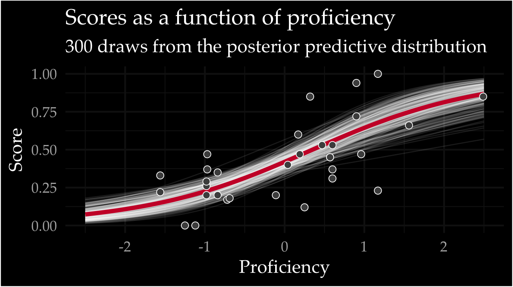

library("ggplot2")
library("dplyr")
library("tidyr")
library("here")
library("brms")
library("marginaleffects")Data visualization for linguists
Interactive demo
Walkthrough with ggplot2 
This tutorial serves as a compliment to the slides.
Setup
These are some of the packages we will use. Note: you do not need to install them for this demo.
It starts with data
Let’s take a look at a data set we will use in this demo. Try using head(new_data) and summary(new_data). What kind of information can you learn about the dataframe?
Let’s revist some basic plots
- Histogram
- Scatterplots
- Boxplots
- Point estimate + spread
Histogram
Scatterplot
Boxplot (box and whisker plot)
Need a refresher regarding what a boxplot is? See here.
{kind=link}
A better way… point estimate + spread
Faceting
What about when we want to see more factors at once? For example, what if we want to see score as a function of proficiency and age? We use facet_wrap() or facet_grid() to create facets
More exercises
Want to challenge yourself a bit more? Using new_data, create the following:
- a boxplot with a variable mapped to the
fillaesthetic - a boxplot with a variable mapped to the
coloraesthetic and a horizontal facet - a scatterplot with a regression line (see
?geom_smooth) - a scatterplot with a regression line (see
?geom_smooth) and a categorical factor (try the aestheticshape) - a histogram of
proficiency - What does
geom_violin()do? What geom can it replace?
Next level… raw data + model estimates
Let’s explore another example in which we plot raw data along with some type of summary from a statistical model. For this example we will fit a Bayesian regression model exploring score as a function of proficiency. In truth, the model was fit behind the scenes and loaded for you, but we did this using the following code:
# Fit bayesian regression model
mod <- brm(formula = score ~ proficiency, family = Beta(), data = new_data)Now we plot the raw data and use the marginaleffects package to sample from the posterior predictive distribution.
predictions(
mod,
newdata = datagrid(
proficiency = seq(-2.5, 2.5, 0.1)
)
) |>
posterior_draws() |>
mutate(drawid = as.numeric(drawid)) |>
filter(drawid < 300) |>
ggplot() +
aes(x = proficiency, y = draw) +
geom_line(aes(group = drawid), alpha = 0.1) +
stat_summary(fun = mean, geom = "line", color = "#cc0033", linewidth = 2) +
geom_point(
data = new_data, aes(y = score),
size = 3, pch = 21, fill = "grey30"
) +
labs(
y = "Score", x = "Proficiency",
title = "Scores as a function of proficiency",
subtitle = "300 draws from the posterior predictive distribution"
) +
ggdark::dark_theme_minimal(base_size = 18, base_family = "Palatino")
Review
Good principles
- Remember 💩
- Colorblind friendly palettes (e.g., viridis)
- Highlight important things
- Help your target audience (reader)
- Plot raw data, and statistical summary or model estimates whenever possible
Bad principles (according to the internet)
- Plots without context
- Illegible fonts
- A line graph with unordered x-axis
- A legend with a zillion categories
- A pie chart
- Axis with scientific notation
- Uninterpretable variable names
- Dual y-Axis
- Bar plots that could be boxplots
- Non-color blind friendly color scales
- Angled text